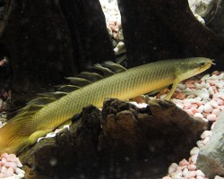
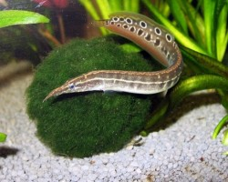
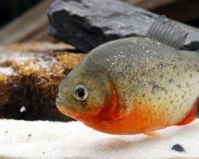

Полиптерус или Многопёр сенегальский, научное наименование Polypterus senegalus, принадлежит семейству Polypteridae. Представитель одного из древнейшего рода рыб, обитавших ещё в триасовый период более 200 миллионов лет назад. Внешний облик сохранился с тех времён и имеет весьма угрожающий вид. Нетребователен и прост в содержании, может быть рекомендована аквариумистам с небольшим опытом. Однако, желающих не так много.

Макрогнатус узкоглазчатый или Колючий угорь, научное наименование Macrognathus aculeatus, принадлежит семейству Mastacembelidae. Этот вид может стать одним из самых незаметных обитателей аквариума из-за своего скрытного образа жизни. Является хищником, но при этом обладает миролюбивым нравом и прекрасно совместим с другими рыбами подходящего размера. Достаточно прост в содержании, способен адаптироваться к различным диапазонам pH и dGH.

Краснобрюхая Пиранья, научное наименование Pygocentrus nattereri, принадлежит семейству Serrasalmidae. Входит в число самых упоминаемых рыб. Широко известна за пределами аквариумистики во многом благодаря большому количеству голливудских фильмов, где Пиранья предстаёт в виде кровожадного хищника.